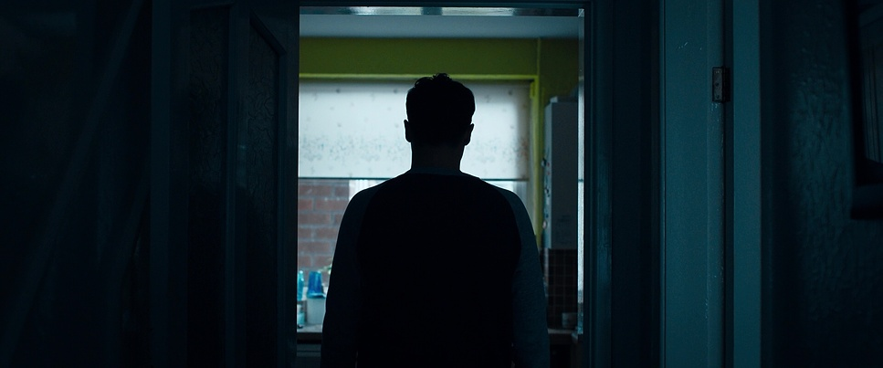

You jolt awake for late nights rest, your sweating bullets like you had woken up from a bad dream. You look around your room, everything looks the same but the air is different. You look out your window, the streets are desolate, you spot a man rise up and bite a women who bleeds, falls and get back up slower than before but still somewhat alive. You look out the window, shocked. What do you do?